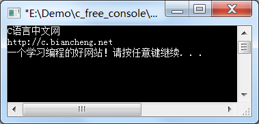
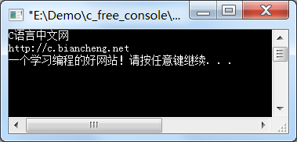

C语言fgets和fputs函数的用法详解（以字符串的形式读写文件）
fgetc() 和 fputc() 函数每次只能读写一个字符，速度较慢；实际开发中往往是每次读写一个字符串或者一个数据块，这样能明显提高效率。
返回值：读取成功时返回字符数组首地址，也即 str；读取失败时返回 NULL；如果开始读取时文件内部指针已经指向了文件末尾，那么将读取不到任何字符，也返回 NULL。
注意，读取到的字符串会在末尾自动添加 '\0'，n 个字符也包括 '\0'。也就是说，实际只读取到了 n-1 个字符，如果希望读取 100 个字符，n 的值应该为 101。例如：
需要重点说明的是，在读取到 n-1 个字符之前如果出现了换行，或者读到了文件末尾，则读取结束。这就意味着，不管 n 的值多大，fgets() 最多只能读取一行数据，不能跨行。在C语言中，没有按行读取文件的函数，我们可以借助 fgets()，将 n 的值设置地足够大，每次就可以读取到一行数据。
【示例】一行一行地读取文件。

fgets() 遇到换行时，会将换行符一并读取到当前字符串。该示例的输出结果之所以和 demo.txt 保持一致，该换行的地方换行，就是因为 fgets() 能够读取到换行符。而 gets() 不一样，它会忽略换行符。
【示例】向上例中建立的 d:\\demo.txt 文件中追加一个字符串。
读字符串函数 fgets
fgets() 函数用来从指定的文件中读取一个字符串，并保存到字符数组中，它的用法为：char *fgets ( char *str, int n, FILE *fp );str 为字符数组，n 为要读取的字符数目，fp 为文件指针。
返回值：读取成功时返回字符数组首地址，也即 str；读取失败时返回 NULL；如果开始读取时文件内部指针已经指向了文件末尾，那么将读取不到任何字符，也返回 NULL。
注意，读取到的字符串会在末尾自动添加 '\0'，n 个字符也包括 '\0'。也就是说，实际只读取到了 n-1 个字符，如果希望读取 100 个字符，n 的值应该为 101。例如：
#define N 101
char str[N];
FILE *fp = fopen("D:\\demo.txt", "r");
fgets(str, N, fp);
表示从 D:\\demo.txt 中读取 100 个字符，并保存到字符数组 str 中。需要重点说明的是，在读取到 n-1 个字符之前如果出现了换行，或者读到了文件末尾，则读取结束。这就意味着，不管 n 的值多大，fgets() 最多只能读取一行数据，不能跨行。在C语言中，没有按行读取文件的函数，我们可以借助 fgets()，将 n 的值设置地足够大，每次就可以读取到一行数据。
【示例】一行一行地读取文件。
#include <stdio.h>
#include <stdlib.h>
#define N 100
int main(){
FILE *fp;
char str[N+1];
if( (fp=fopen("d:\\demo.txt","rt")) == NULL ){
puts("Fail to open file!");
exit(0);
}
while(fgets(str, N, fp) != NULL){
printf("%s", str);
}
fclose(fp);
return 0;
}
将下面的内容复制到 D:\\demo.txt：
C语言中文网
http://c.biancheng.net
一个学习编程的好网站！

fgets() 遇到换行时，会将换行符一并读取到当前字符串。该示例的输出结果之所以和 demo.txt 保持一致，该换行的地方换行，就是因为 fgets() 能够读取到换行符。而 gets() 不一样，它会忽略换行符。
写字符串函数 fputs
fputs() 函数用来向指定的文件写入一个字符串，它的用法为：int fputs( char *str, FILE *fp );str 为要写入的字符串，fp 为文件指针。写入成功返回非负数，失败返回 EOF。例如：
char *str = "http://c.biancheng.net";
FILE *fp = fopen("D:\\demo.txt", "at+");
fputs(str, fp);
表示把把字符串 str 写入到 D:\\demo.txt 文件中。【示例】向上例中建立的 d:\\demo.txt 文件中追加一个字符串。
#include<stdio.h>
int main(){
FILE *fp;
char str[102] = {0}, strTemp[100];
if( (fp=fopen("D:\\demo.txt", "at+")) == NULL ){
puts("Fail to open file!");
exit(0);
}
printf("Input a string:");
gets(strTemp);
strcat(str, "\n");
strcat(str, strTemp);
fputs(str, fp);
fclose(fp);
return 0;
}
运行程序，输入C C++ Java Linux Shell，打开 D:\\demo.txt，文件内容为：
C语言中文网
http://c.biancheng.net
一个学习编程的好网站！
C C++ Java Linux Shell
关注公众号「站长严长生」，在手机上阅读所有教程，随时随地都能学习。内含一款搜索神器，免费下载全网书籍和视频。

微信扫码关注公众号